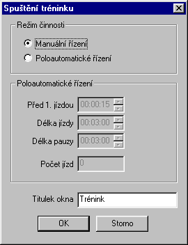
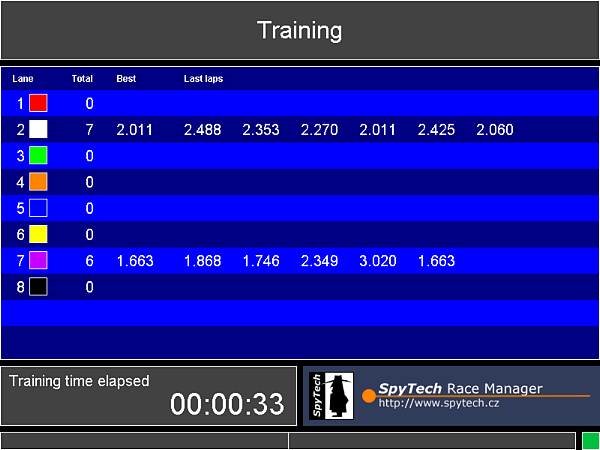

(Command Tools | Training)
The training mode allows the racers to measure their training. The racers may experiment with their cars for unlimited time. Having the track correctly set up, we may run the training measurement by the above command. The training may be run either in manual control mode or semiautomatic control mode. Before the training is started the following dialog window pops up:
In this window you may define the behavior of the application while measuring the training. Then press OK. The following screen appears:
Each line of the table represents one lane of the track. For each lane, total number of laps elapsed, the best lap time and last seven lap times are shown. The box in the bottom right corner indicates the status of the power supply. Green color is for the track switched on, red is for the track switched off.
If the manual control mode has been selected, each lane keeps these data as long as the racer drives their car. The whole line is reset after inactivity longer than 1 minute is detected. In the semiautomatic control mode, rides and pauses are rotated in a similar way like in the race.